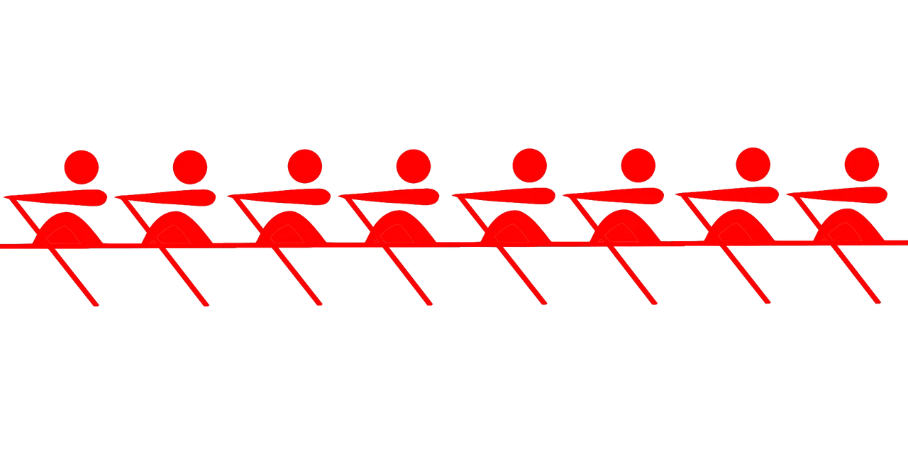

Welcome to My Website
Hello! My name is Aiden, and this website is a small introduction to me, my interests, and my experience. I created this website from scratch using HTML as part of my Internet Technologies and Web Design class.
I am interested in technology, sports, music, and learning how things work. One of the biggest activities in my life has been rowing. I have been involved with rowing for several years, and it has taught me a lot about consistency, teamwork, and pushing myself to improve.

What You Will Find Here
This website contains three pages. My home page gives some general information about me. My resume contains my education, skills, experience, and goals. The third page focuses on rowing and explains some of the things that make the sport interesting to me.
My Interests
- Rowing and fitness
- Computer technology
- Web design
- Music
- Video games
- Learning new skills
My Goals
One of my goals is to continue improving my technical skills. Learning HTML, CSS, JavaScript, and other programming concepts can help me understand how websites and software are created. I also want to continue developing skills that can be useful in college and in a future career.
Another important goal is continuing to improve at rowing. Rowing is a sport where small improvements can add up over time, which makes it especially rewarding.
Favorite Type of Music
Music is another major interest of mine. I enjoy rock and alternative music, especially bands with energetic guitar and strong vocals. Music is something I listen to while relaxing, working out, or just passing time.
Website Media
The website also includes media as required for the project.
Conclusion
Thanks for visiting my website. Use the navigation at the top of the page to visit my resume or learn more about rowing.